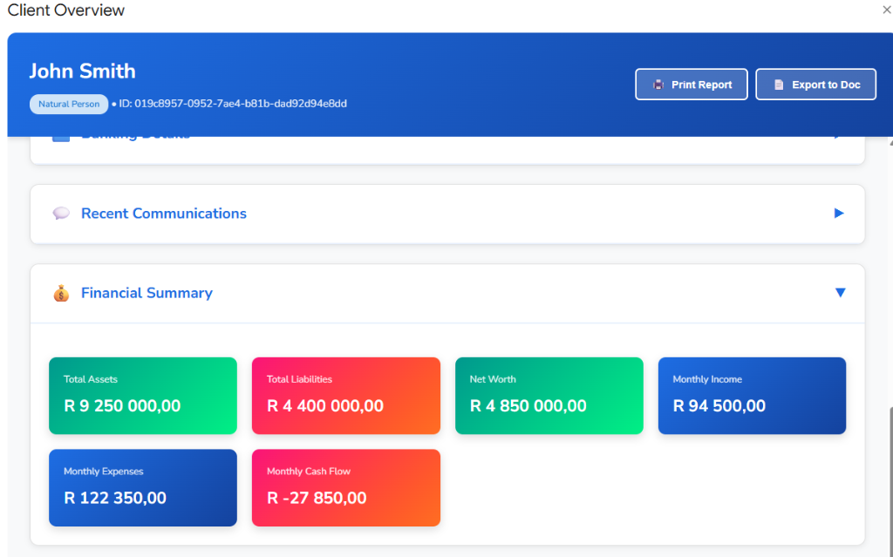
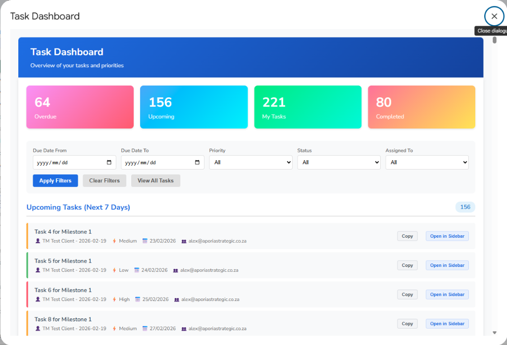
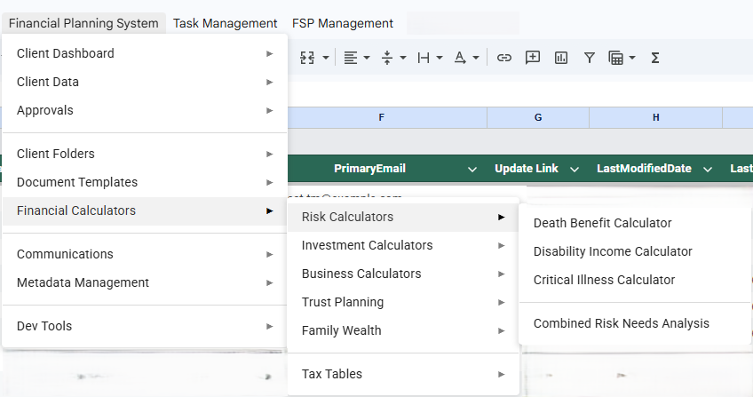
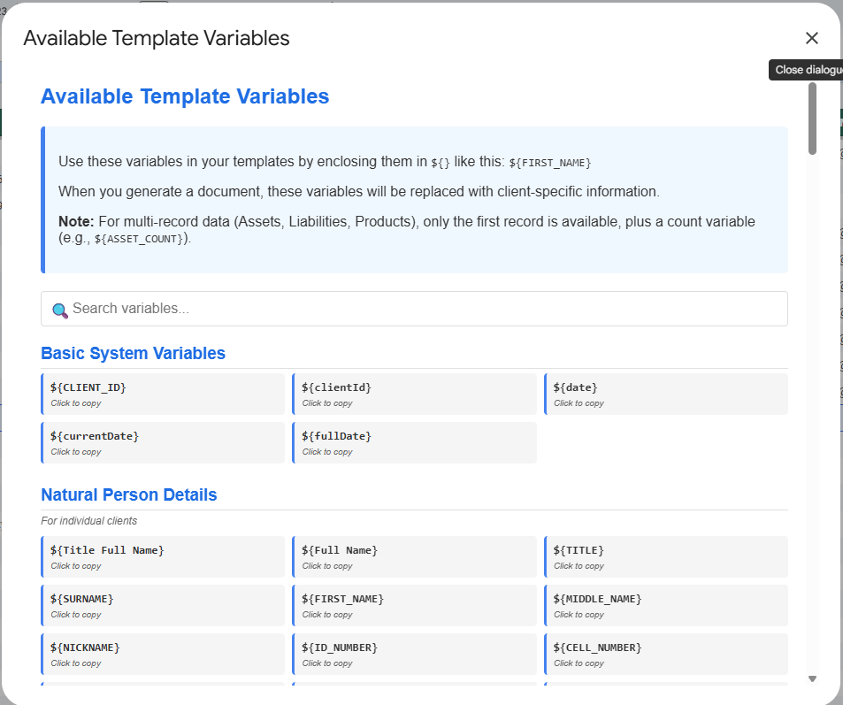

Aporia — /əˈpɔːrɪə/ — the point where the old way forward no longer works. We build the tools that lead independent advisors forward.
Built by Practitioners, for Practitioners
Independent advisors are drowning in administration, copying data between platforms, and filling out the same forms over and over. You didn't start your practice to manage paperwork.
Every manual copy-paste is a system failure. Transferring client info between platforms consumes hours that belong to your clients.
Hiring more admin staff to handle broken processes increases overhead without addressing the root cause: broken systems.
Most CRMs are built for sales pipelines or enterprise IT. They ignore the daily reality of the independent advisor.
Founder & Lead Systems Architect · Practising Financial Advisor · 10+ Years in SA Financial Services
I've spent over ten years as a financial advisor in South Africa — four at a large insurer, six-plus in the independent space. In that time, the regulatory landscape has only grown heavier. FICA, FAIS, TCF, the upcoming COFI Bill — each layer adding more administrative weight. And with every change, the tools we rely on feel more like static snapshots — updated when you see a client, then forgotten until the next review. The gap between how advice should work and how our systems actually work keeps widening.
I've used the systems available in the independent space. They work. But they've always felt like they come from one of two angles — either built to drive sales, or built to tick compliance boxes. Neither starts from the question that matters most to me: how do we lighten the administrative burden so the advisor can focus on the client?
When I started out, I was genuinely excited when a client wanted to proceed. Now? You almost shrug — because you know what comes next. The mountain of paperwork, the back-and-forth, the admin that turns a single case into days of processing. That's what this system is designed to address. Not just new business, but the full lifecycle — onboarding, servicing, reviews, closures — with the advisor and client connected throughout, not just at touchpoints.
The best financial advice comes from a holistic view — seeing a client's full picture, not just isolated products. I believe the same is true for the tools we use. That's why I'm building a purpose-built advisory practice platform — an interconnected ecosystem, not a collection of features. Right now, it's an early-stage system — a working beta that I use daily in my own practice to validate the architecture and test what's possible. It has rough edges and plenty still to build. But the foundation is there, the workflows are real, and every iteration is shaped by what actually happens at the desk. It's being built up from where it is — not polished from the top down.
This isn't a generic CRM bent into shape for financial services. General-purpose project and CRM platforms are powerful, but they're exactly that — general-purpose. You spend more time configuring them than using them. This system is built from scratch for the South African independent financial advisor: our regulatory landscape, our provider integrations, our market realities. Every workflow, every field, every calculation exists because a practising advisor needed it.
Aporia Strategic was founded by a practising financial advisor. We don't guess what you need; we live your frustrations. Every tool we build is tested in a live practice before it reaches yours.
Optimised for what you actually do after a client meeting.
Data flows automatically to forms, calculators, and reports.
Reliable, predictable outputs for your professional reputation.
Purpose-built client data management running on the infrastructure you already trust (Google Workspace).
Auto-populate multiple product provider forms from a single data source.
Built-in, verified calculators for risk, investment, and insurance scenarios.
Stage 3 Vision
Today, the platform runs on solid, deterministic tools — no AI is involved yet. But the architecture is being designed with a clear long-term direction: once the foundation is proven, let AI orchestrate it.
Every tool must work flawlessly on its own before AI enters the picture. We're building that foundation now — stable, predictable, and deterministic.
The future vision: AI decides which tools to use — it doesn't do the data work. The result would be deterministic outputs you can stake your professional reputation on.
The end goal is a Google Cloud Platform backend powering intelligent agentic workflows — an AI assistant that delegates to proven, verified tools. That's the Stage 3 ambition.
Real screenshots from the working beta — built and tested in a live advisory practice.

Client Overview
Financial summary, communications, and banking details at a glance.

Task Dashboard
Track priorities, filter by status, and manage your advisory workflow.

Financial Calculators
Risk, investment, business, trust, and tax calculators — all built in.

Document Automation
Template variables auto-populate client data into any document.
Pragmatic progression from CRM to Intelligent Orchestration.
Whether you're an advisor curious about the toolset, or you'd like to learn more about our vision — reach out.
mail alex@aporiastrategic.co.zaStrength in Vision,
Power in Purpose.